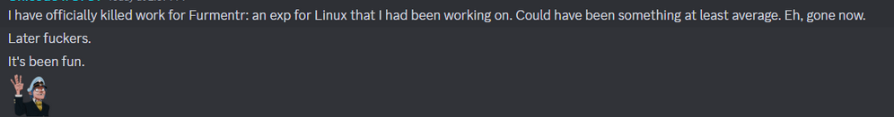

The 2024 Roblox on Linux Block FAQ
Aka: The Second Great ROL Famine (as suggested by Jrelvas)
Why did Roblox decide to block Linux?
There are multiple reasons, but we’ll be discussing the main contributing factors:
- Increased cheat detection on Wine
- Floundering of Wine-based exploits in different Discord servers
- Maintainability issues As Bitdancer stated, the 3 contributing factors above played a huge part in motivating Roblox to take this decision. There have recently been multiple instances of Wine-based exploits abusing the weakened version of Hyperion on Wine, and Roblox has an obligation to close up opportunities for malicious behavior.

Will Studio be affected?
No, Studio will continue to work. Bitdancer has confirmed that Roblox Studio will not be receiving Hyperion currently, as it’s only used for game development. Vinegar will continue to maintain Roblox Studio support. However, Roblox may sometimes include breaking changes into Studio that result in several days of downtime while Wine or RoL maintainers fix the issue. Additionally, while Roblox is not considering adding Hyperion to Studio currently, we cannot say that it will hold true in the future.
What alternatives do we have?
We currently have two alternatives outside of running Windows:
- Waydroid: Waydroid can be used to run Roblox on x86 Linux systems (albeit with a performance penalty and non-free translation layer usage) to play the mobile version of Roblox Player. Please note that you will not be able to play Desktop-only games, and compatibility may vary from system to system.
- Virtualization: Creating a Windows virtual machine is another viable alternative, albeit with more variability. It is required that you pass through a GPU (search VFIO passthrough), enable several Hyper-V hiding features, and enable ignore-msrs. Even then, the performance and compatibility of such virtual machines have varied from user to user, and is not a perfect alternative.
Alternatively, check out Territe’s list of free games you can play.
What will happen to Vinegar / Grapejuice?
Grapejuice is currently in end-of-life status, and will be archived by Brinker soon. Vinegar will continue to be maintained, as Roblox Studio will remain functional (we cannot guarantee functionality, though). A warning message regarding the status of Roblox Player is slated to be implemented in the near future, in conjunction with Roblox’s own error window.
Can I bypass the Byfron block?
There has not been a single working documented method of bypassing Byfron to date, nor does RoL plan on working on one in the future. While it is not impossible for such a bypass to surface, we discourage discussion regarding bypasses in Vinegar, as the conversations are usually vague and non-constructive. Additionally, attempts to bypass Byfron can lead to automatic bans by Roblox.
Why does Roblox hate Linux?
Roblox absolutely does not hate Linux in any way or shape! They have been transparent and helpful with us every step of the way; they were the reason why we were able to experience Roblox on Linux after the addition of Hyperion in the first place. Roblox, as a company, has more urgent priorities with greater precedence, and therefore are not capable of supporting the Linux platform presently.
Will Roblox Player be blocked forever?
At the moment, Roblox has no intention to bring back Player support on Linux, at least in the near future. However, it is not impossible for it to return; we, at VinegarHQ, will remain optimistic for one.
How do I complain?
As always, civil discussion is the way forward. Contributions to constructive topics on Roblox DevForums and other standard avenues of communication is always preferable; in fact, the topic of Roblox on Linux is frequently brought up at RDC.
I want to (insert harmful action here) to get back at Roblox!
We sincerely ask that you do not engage in or promote harmful activities. Demonstrating malice only hurts the reputation of Linux users and worsens the chance of a return to the platform. Moderators on Roblox, VinegarHQ, and Grapejuice will hold those who make threats accountable.